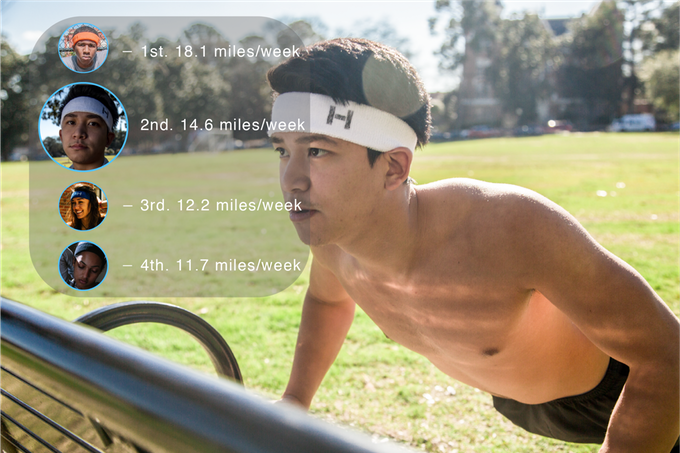
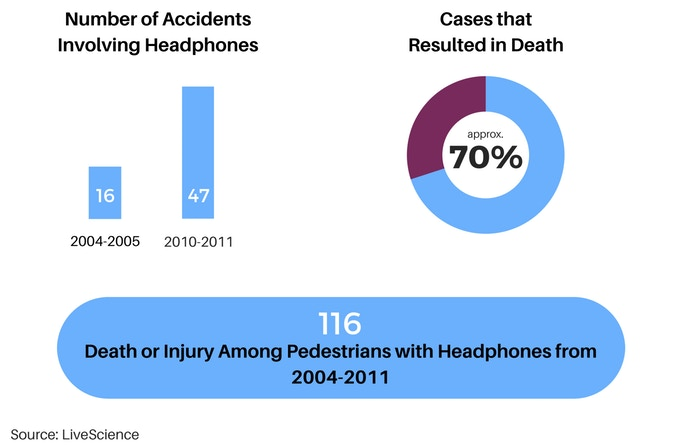

Literally feel the music vibrate through your bones with the HeadNoise Fit's revolutionary bone-conduction engineering. Components at the front of the headband send gentle vibrations through your forehead. These vibrations travel through your skull and to your inner ear, generating sound.
The HeadNoise Fit's biometric sensors empower you to take control of your body, delivering precise, real-time fitness data.
Located in the headband CORE, bluetooth-enabled sensors monitor your fitness traits through your forehead and skull.
Set goals, analyze progress, and measure success with the HeadNoise Fit application - a digital, easy-to-use fitness companion to keep you motivated through thick and thin.
Dirty headband? The HeadNoise Fit is designed for easy cleaning. Simply remove the CORE from the manufactured slit in the back of the headband, and throw the material in the wash.
We found it vitally important to combine our hardware with software to make a truly great product and enhance your overall experience. From the casual jogger to the fitness enthusiast we kept you in mind from start to finish. HeadNoise Fit will release an app alongside the headband upon delivery.
The HeadNoise Fit is built to keep you safe, no matter the circumstance. Today's headphone industry tells a different story.
Noise-cancelling headphones are the staple of the headphone industry today. Sure, they provide a unique experience, but they shouldn't compromise your safety. When you cancel outside noise and completely block out an entire sense, you put yourself at risk for injury and sometimes even death. Take a look at these statistics from a few years ago.
Whether you're pacing through busy city streets or exploring winding bike trails, your environmental awareness protects you from the world's accidents. The HeadNoise Fit keeps you tuned in, so you won't ever miss a beat - with the world or your music.